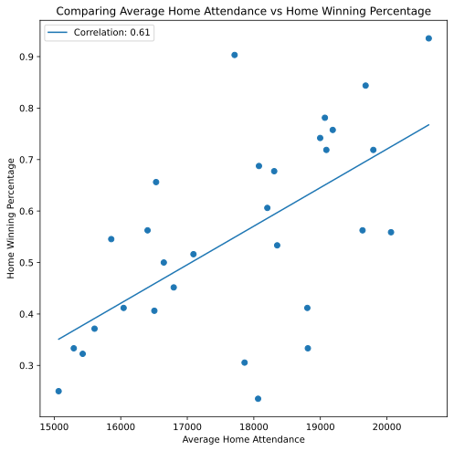

Graph 1

This is a simple bar graph, displaying win percentage across the league. The Milwaukee Bucks are the only team with a win percentage over 80 (.815), with a record of 53-12. The worst team in the league was the Golden State Warriors, with a win percentage of .231 and record of 15-50.
Graph 2
This is a scatter plot showing the correlation between margin of victory and winning percentage. The correlation comes out at 0.96, which is significant. The Milwaukee Bucks, with the highest winning percentage, won by over 10 points per game. The second best margin of victory was not even 7.5. The Bucks margin of victory was on pace to be the 10th highest ever.
Graph 3

This scatter plot shows the correlation between home winning percentage and home attendance every game. The correlation is only 0.61. However, of teams with a win percentage of over 0.500 at home, only 3 out of 18 are below the line. The team with the highest home win percentage did have the highest home attendance.
Graph 4

Who is hot, and who is cold?
The graph is of the top 10 teams (by win %). On the x-axis the month, and on the y-axis is the win % in each of those months. It is worth noting, however, that in month 5, every team only played 3-6 games before the season was ended due to Covid-19.
The Lost Angeles Lakers and Milwaukee bucks started the season off with a win percentage over 90. After month 1, the Bucks had the highest win percentage in the next 3 months. The Bucks were the most consistent winning team throughout the year.
Graph 5
This clustered bar graph is of the top 5 teams, looking at the "Four Factors". The four factors are to score efficiently, protrect the basketball on offense, get as many rebounds as possible, and get to the foul line as often as possible.
eFG is effective field goal percentage
TOV is turnover percentage
ORB% is offensive rebound percentage
FT/FGA is offensive and defensive free throw rate
By looking at this graph, strengths and weaknesses can be seen. The Milwaukee Bucks are the worst at scoring efficiently, as seen by their low eFG%. However, their ORB% is the highest. The Bucks score a lot of points on second chance opportunities.
Graph 6
This is another scatter plot, this time comparing shooting percentages from different ranges to winning percentage.
The team with the highest win percentage, the Milwaukee Bucks, are one of two teams to be in the top 5 for shooting percentage at 2 different ranges. The Bucks ranked 2nd at both short and midrange.